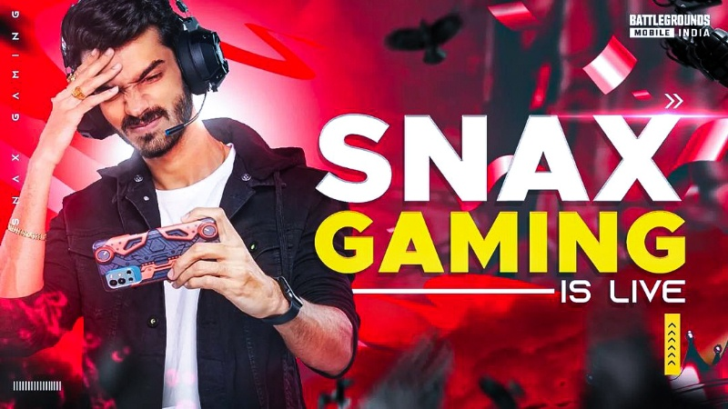
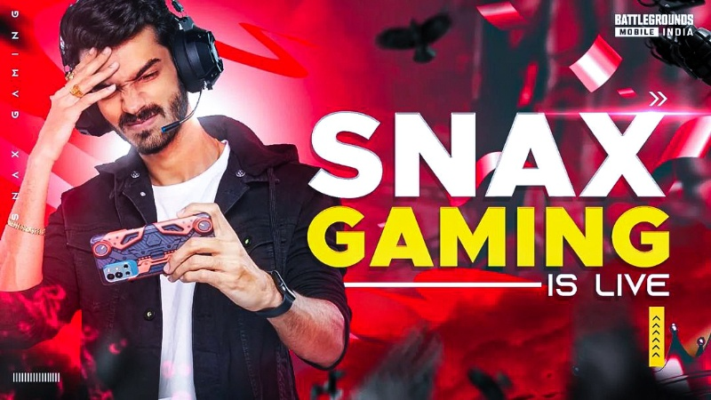

BIO-3
SNAX
 

Video gaming in India is an emerging market since India is experiencing strong growth in online gaming, making it one of the top gaming markets in the world. Over the past few decades, the Indian gaming industry has gone from close to nonexistent in the 1990s to one of the top markets globally in the late 2010s. In 2019, the online gaming market in India was estimated at ₹6,200 crore (US$740 million) with an estimated 300 million gamers, a 41.6% increase from 2018.[3] As of 2021, it is one of the top five mobile gaming markets in the world. By the third quarter of 2020 there were more than 7.4 billion mobile game downloads.[4] According to the "State of India Gaming Report," released by venture capital firm Lumikai with Google, as of November 2023, there were 568 million gamers in India. Additionally, it was reported that in FY23, 41% of gamers were female and 66% were from non-metros, with each user on average spending 10–12 hours per week on video games.[5]